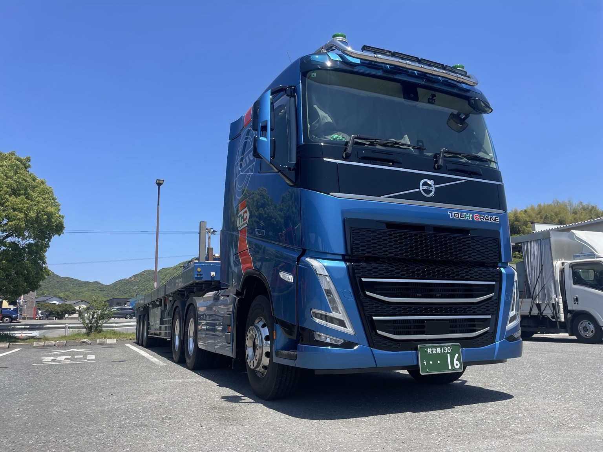
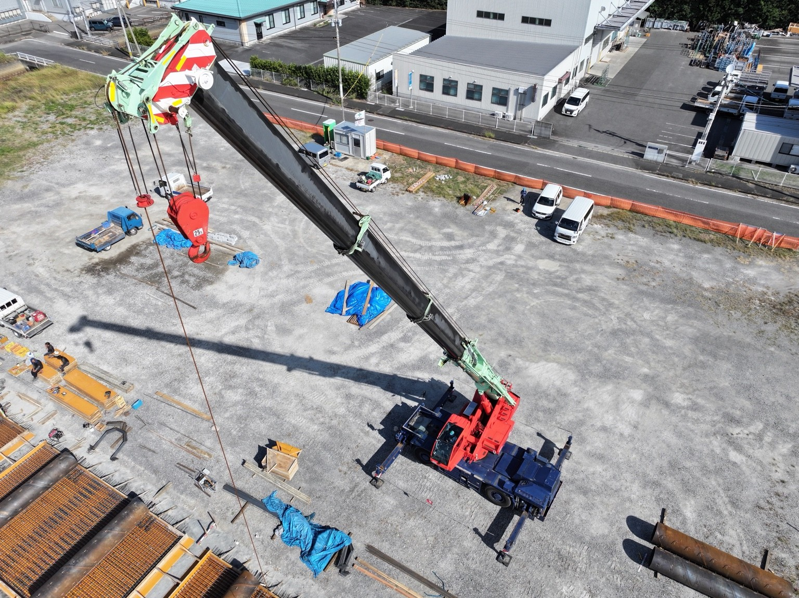
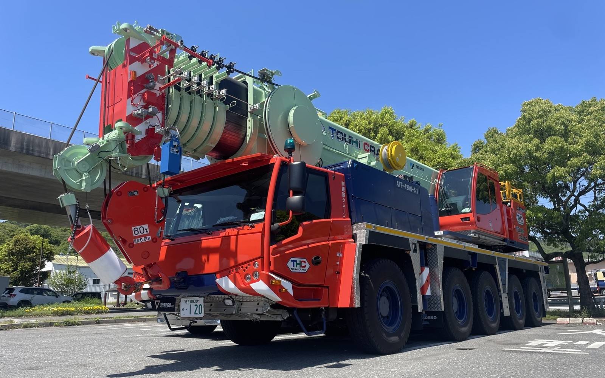

03TRANSPORT
トラック・トレーラー
各種運搬に対応
運輸部門ラフタークレーンから大型オールテレーンクレーン、各種運搬車両まで対応しています。

0113t〜100t
詳細・資料を見る →
02120t〜400t
詳細・資料を見る →
03各種運搬に対応
運輸部門トン数別の保有台数と型式をご確認いただけます。
※保有車両一覧表（2026年4月現在）に基づく。クレーン合計24台。運輸部門の車両は別途12台。
長崎のさまざまな現場で、クレーン作業・運送・一般建設業を行っています。
仕事のご相談はこちら →有限会社東彼クレーンでは、クレーンオペレーター、組立解体作業員、大型トレーラ・トラックドライバーを募集しています。
移動式クレーン運転士免許・大型特殊自動車免許の取得費用は会社が全額負担。資格・経験の有無を問わず応募できます。
求人応募・お問い合わせは電話またはメールで受け付けています。お急ぎの場合はお電話でお問い合わせください。
昭和48年創立。東彼杵町を拠点に、移動式クレーン・運輸・一般建設業を行っています。
クレーン作業・運送・一般建設業のご相談、お見積もり、採用についてお問い合わせください。
〒859-3807
長崎県東彼杵郡東彼杵町彼杵宿郷700-1